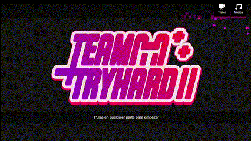
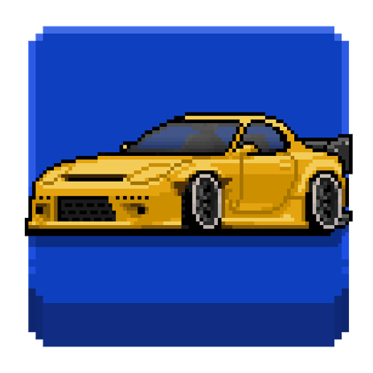
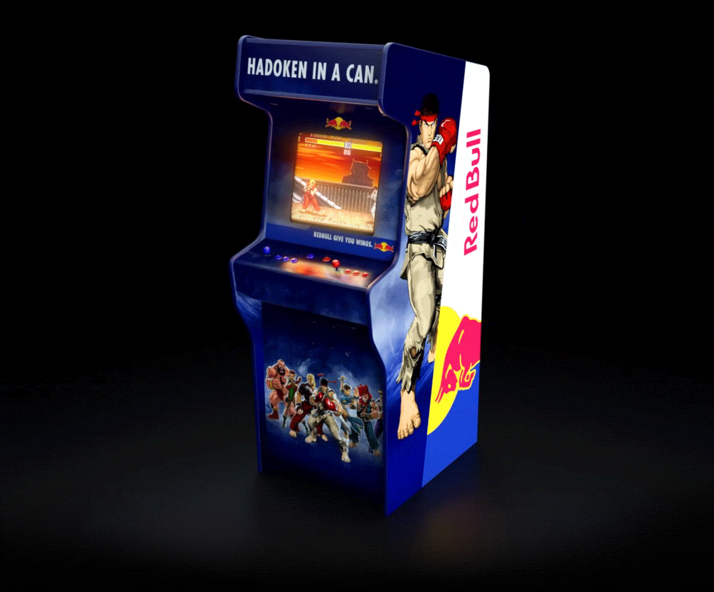

Interfaz Aracde🕹

La interfaz de nuestro sistema arcade ha sido
diseñada para ofrecer una
experiencia intuitiva, rápida y envolvente, manteniendo la esencia de las clásicas máquinas
recreativas. Desde el primer momento, el usuario es recibido con un menú vibrante y dinámico,
inspirado en los icónicos gráficos pixel art de los años 80 y 90, con colores brillantes,
efectos de
neón y animaciones fluidas.
El sistema de navegación es simple y eficiente, los jugadores pueden desplazarse entre las
distintas
categorías de juegos usando un joystick o botones dedicados, permitiendo seleccionar títulos por
género, año de lanzamiento o popularidad.
Cada juego cuenta con una pantalla de vista previa donde se muestra su portada, una breve
descripción y detalles clave como el número de jugadores, desarrollador y fecha de lanzamiento.
Web Pixel Car Racer


Página está diseñada para reunir a todos los
apasionados de este increíble
juego de carreras pixeladas. Aquí encontrarás las últimas noticias, guías, trucos y eventos
especiales para mejorar tu experiencia en la pista.
Explora nuestra galería de vehículos personalizados, comparte tus mejores tiempos con la
comunidad y
participa en torneos donde solo los mejores pilotos pueden ganar. Además, descubre secretos
ocultos
y estrategias para optimizar tu auto y dominar cada circuito.
The Maze Wizard 🧙♂️✨

Un desafiante juego en el que controlarás a un poderoso mago que debe atravesar intrincados
laberintos llenos de misterios y trampas! Usa tu inteligencia y habilidades mágicas para
encontrar
la salida y llegar al final de cada nivel.
A medida que avances, los laberintos se volverán más complejos, con pasadizos ocultos, portales
mágicos y enemigos que intentarán bloquear tu camino. ¿Podrás resolver cada desafío y completar
tu
misión?
Arcade

En el marco de nuestra formación en el ciclo de Administración de Sistemas Informáticos en Red
(ASIR), un grupo de alumnos nos embarcamos en un proyecto emocionante: la creación de un arcade
completamente funcional. Esta iniciativa nos permitió aplicar nuestros conocimientos en hardware,
software y redes, además de fortalecer nuestra capacidad de trabajo en equipo y gestión de
proyectos.Nuestro
Counter-Strike 2

Los alumnos del ciclo formativo de Administración de Sistemas Informáticos en Red (ASIR) hemos
organizado un torneo de Counter-Strike 2 en LAN, un evento que no solo busca la competencia y el
entretenimiento, sino también fortalecer el trabajo en equipo y aplicar nuestros conocimientos en
redes y administración de servidores.Desde la planificación hasta la ejecución, este torneo ha sido
un desafío que nos ha permitido integrar habilidades técnicas y organizativas.